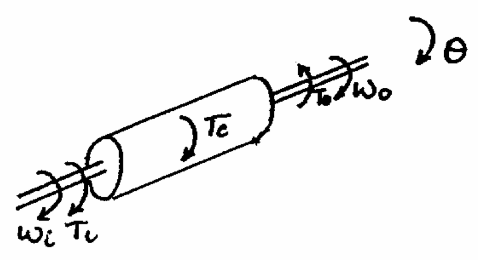
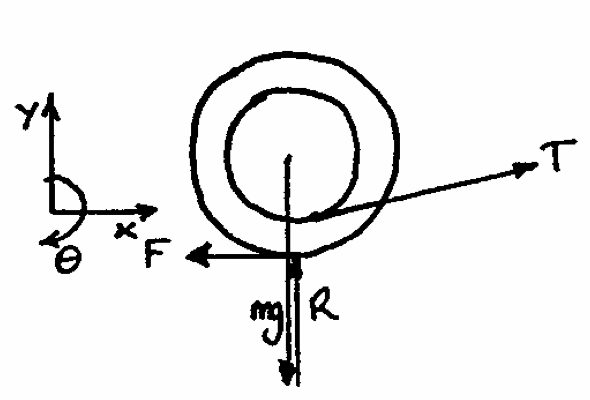
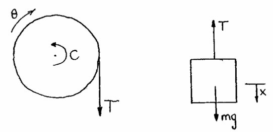

Q1: The diagram shows a typical 3-speed car gearbox (with reverse omitted). The gears are in mesh all the time; for 1st and 2nd gear A and B respectively are locked to the output shaft. In 3rd (top) gear the input and output shafts are locked together. For each of the intermediate gears calculate the output speed and torque and the torque required to hold the casing, when the engine delivers $64kW$ at $500revmin^{-1}$
| Hints | |
|---|---|
Calculate the gear ratio and use this to work out the rotational speed of the output shaft. |
|
 |
|
$T_i - T_o + T_c = I\ddot{\theta} = 0$ |
Q2: The double gear shown rolls on the stationary lower rack; the velocity of it centre A is $1.2ms^{-1}$ directed to the right. Determine the angular velocity of the gear, the velocity of the upper rack R and the point D.
| Hints | |
|---|---|
Take the centre of the gear as your datum and compare everything to that. |
|
Work out the angular velocity of $1.2ms^{-1}$ |
Q3: A reduction gearbox consists of an input gear with an inertia of $0.05kgm^2$ and 20 teeth driving a gear with 60 teeth mounted on a lay shaft with an inertia of $0.1kgm^2$. The other ned of the lay shaft drives the output shaft with an inertia of $0.5kgm^2$ through a reduction gear ratio 5:1. Calculate the overall reduction gear ratio and the effective inertia of the system measured at the input shaft. If the input power to the gearbox is $10kW$ at a speed of $1500revmin^{-1}$ and the gearbox efficiency is 90% calculate the output torque and the holding torque provided by the mounting bolts on the gearbox casing.
| Hints | |
|---|---|
Gear Ration = Input Turns / Output Turns |
|
$ I_{\mathrm{effective}} = I_{\mathrm{input}} + \frac{I_{\mathrm{lay shaft}}}{G^2_{\mathrm{in:lay}}} + \frac{I_{\mathrm{out}}}{G^2_{\mathrm{in:out}}}$ |
|
| Output Torque - Input Torque = Holding Torque |
Q4: Grandma sits sewing, drops her spool of thread on the floor and the cat paws it out of her reach (silly Grandma). If it is lying as shown in the figure, under what circumstances can Grandma retrieve the spool by pulling at the thread? Assume sufficient friction on the floor so that the spool will roll without slipping. Show that the horizontal acceleration of the spool is:
$\frac{Tr}{m}(\frac{r\cos\alpha-a}{k^2+r^2})$
where k is the radius of gyration of the spool and m is the mass
| Hints | |
|---|---|
 |
|
Horizontal Forces: |
|
Moments about the centre of the spool: |
Q5: An automatic radar tracker with a motor moment of inertia of $0.014kgm^2$ turns an aerial of moment of inertia $28.8kgm^2$ through a reduction gearbox. On start up, the gearbox has a ratio of 60:1.
a. Calculate the initial acceleration of the aerial if the motor torque is $1Nm$.
b. Calculate the optimum gear ratio which would give the maximum acceleration at the aerial for any given motor torque.
c. The motor characteristics are such that the maximum torque available falls as the motor speeds up at a rate of 7% of the standstill torque for every $20rads{^1}$. Calculate the reduction ratio for the maximum acceleration of the aerial when it turns at $8rads^1$
| Hints | |
|---|---|
$I_{\mathrm{eff}} = I_{\mathrm{motor}} + \frac{I_{\mathrm{aerial}}}{G^2}$ |
|
$\ddot{\theta}_{\mathrm{aerial}} = \frac{T_{motor}}{G(I_{\mathrm{motor}}+\frac{I_{\mathrm{aerial}}}{G^2})}$ |
|
Need to get $T_{\mathrm{motor}}$ in terms of $\omega_{\mathrm{aerial}}$ and put into the above equation. |
Q6: A flywheel of inertia I is supported on a shaft of radius r. A rope of negligible thickness is wound around the shaft and supports a mass M hanging vertically. A constant frictional couple C acts on the shaft. Prove that the angular acceleration of the shaft is given by the expression:
$\ddot{\theta} = \frac{Mgr-C}{Mr^2+I}$
| Hints | |
|---|---|
 |
|
$Mg-T=M\ddot{x}$ |
|
$\ddot{x}=\ddot{\theta}r$ |